Listening visuals Cambridge 14Reviewed results: 122 confirmed issue records (86 duplicate pairs, 9 sequence inversions, 1 wrong-Part image, 26 clipped images); 23 suspected records. Counts overlap Parts/assets. Full reviewed CSV. Raw audit.json/findings.csv are detector output, not the final defect list. Fallback scope alone is not a defect. OCR ranges are incomplete hints.
All books · Cambridge 14: 16 Parts · exact current resolver outputCambridge 14 / Test 1 / Part 1
No confirmed/candidate defect detected; not a visual PASS
Q[1, 10]: 1, 2
#1 OCR Q[[1, 10]] · 890×1150
Test_1_Section_1_Crime_Report_Form.png
assets/public/562ada0ce99ae89b531464ede63e6079066fae5148055fa3c46ebe7f81ebd88d.png
asset-562ada0ce99ae89b531464ede63e6079066fae5148055fa3c46ebe7f81ebd88d#2 OCR Q[[1, 10]] · 1191×1684
Test_1_Source_PDF_010.png
assets/public/b3c1f7510fa4cb5d65274dd6f90170702822b00b9ba3f689ec7d321bfc8b3254.png
asset-b3c1f7510fa4cb5d65274dd6f90170702822b00b9ba3f689ec7d321bfc8b3254 Cambridge 14 / Test 1 / Part 2
V0296:confirmed:duplicate_content; C047:confirmed:clipped_source
Q[11, 12]: 1, 2, 3
Q[13, 14]: 1, 2, 3
Q[15, 20]: 1, 2, 3
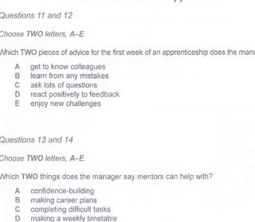
#1 OCR Q[] · 860×750
Test_1_Section_2_Induction_Choices.png
assets/public/0b961e03b90d90b7626aa37b3e4fa8a230bbe9ddbb9dcf63c607df1bc26bedd3.png
asset-0b961e03b90d90b7626aa37b3e4fa8a230bbe9ddbb9dcf63c607df1bc26bedd3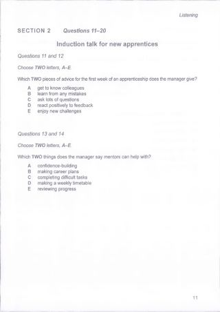
#2 OCR Q[[11, 20]] · 1191×1684
Test_1_Source_PDF_011.png
assets/public/0c1b7dd10c41788f338bb76850fbad3bfb6babf70fd553d0fdd7ab6670e52d0a.png
asset-0c1b7dd10c41788f338bb76850fbad3bfb6babf70fd553d0fdd7ab6670e52d0a#3 OCR Q[[15, 20], [15, 20]] · 1191×1684
Test_1_Source_PDF_012.png
assets/public/fd87b64a7714b849625759af802242c2a72effbbdccb297dbc07d5ff41e9a5a1.png
asset-fd87b64a7714b849625759af802242c2a72effbbdccb297dbc07d5ff41e9a5a1Cambridge 14 / Test 1 / Part 3
No confirmed/candidate defect detected; not a visual PASS
Q[21, 25]: 1, 2
Q[26, 30]: 1, 2
#1 OCR Q[[21, 30], [21, 25]] · 1191×1684
Test_1_Source_PDF_013.png
assets/public/f0e2b898c46488cc6180d1a6eb7b0436f4aa545715ced76dbbcfecb18d415327.png
asset-f0e2b898c46488cc6180d1a6eb7b0436f4aa545715ced76dbbcfecb18d415327#2 OCR Q[[26, 30], [26, 30]] · 1191×1684
Test_1_Source_PDF_014.png
assets/public/0285f980c75a6fbd269a6470c35f2f7109c9056800a5da58832379299d688dea.png
asset-0285f980c75a6fbd269a6470c35f2f7109c9056800a5da58832379299d688dea Cambridge 14 / Test 1 / Part 4
V0297:confirmed:duplicate_content; C041:suspected:crop_edge_risk
Q[31, 40]: 1, 2
#1 OCR Q[] · 860×1220
Test_1_Section_4_Marine_Energy_Notes.png
assets/public/37cc12f86e858bc9cdc27c3b7a7c2dcc1424a3ede26b324cb960aa2b63fffcb5.png
asset-37cc12f86e858bc9cdc27c3b7a7c2dcc1424a3ede26b324cb960aa2b63fffcb5#2 OCR Q[[31, 40]] · 1191×1684
Test_1_Source_PDF_015.png
assets/public/f43449798fd7ff37e7ea8255ea612284af75d629d289c943d92929de48f79803.png
asset-f43449798fd7ff37e7ea8255ea612284af75d629d289c943d92929de48f79803 Cambridge 14 / Test 2 / Part 1
No confirmed/candidate defect detected; not a visual PASS
Q[1, 10]: 1, 2 [Part fallback]
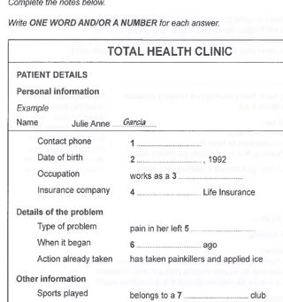
#1 OCR Q[] · 840×895
Test_2_Section_1_Total_Health_Clinic_Form.png
assets/public/e30712ccf662556c11ac6ce9ea1a535b208ae290fd0c839efcae7a9d074bf861.png
asset-e30712ccf662556c11ac6ce9ea1a535b208ae290fd0c839efcae7a9d074bf861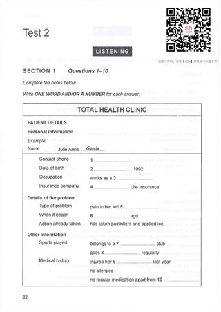
#2 OCR Q[[1, 10]] · 1191×1684
Test_2_Source_PDF_032.png
assets/public/76a397687d63a2398d5cad718afd399381b126917fd34b1f0f4381de4b1a6333.png
asset-76a397687d63a2398d5cad718afd399381b126917fd34b1f0f4381de4b1a6333Cambridge 14 / Test 2 / Part 2
V0299:confirmed:duplicate_content; V0300:confirmed:order_inversion; C009:suspected:crop_edge_risk
Q[11, 15]: 1, 2, 3 [Part fallback]
Q[16, 20]: 1, 2, 3
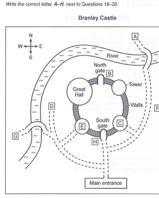
#1 OCR Q[[16, 20]] · 835×1035
Test_2_Section_2_Branley_Castle_Plan.png
assets/public/9134a8d2cec1aaf9fc33c1382bbe643511bdd5163c6bd24a9ad4728f037ca527.png
asset-9134a8d2cec1aaf9fc33c1382bbe643511bdd5163c6bd24a9ad4728f037ca527#2 OCR Q[[11, 20], [11, 15]] · 1191×1684
Test_2_Source_PDF_033.png
assets/public/395be7a8ab0df31a497d69048e36a027ace0d9a94ebed9c0b3818ff43ecc13e4.png
asset-395be7a8ab0df31a497d69048e36a027ace0d9a94ebed9c0b3818ff43ecc13e4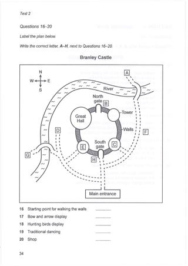
#3 OCR Q[[16, 20], [16, 20]] · 1191×1684
Test_2_Source_PDF_034.png
assets/public/104795909c64a6f4907769817c8623a06ab48e7effc3d7e1c7bdf53f1a3d6455.png
asset-104795909c64a6f4907769817c8623a06ab48e7effc3d7e1c7bdf53f1a3d6455Cambridge 14 / Test 2 / Part 3
No confirmed/candidate defect detected; not a visual PASS
Q[21, 24]: 1, 2 [Part fallback]
Q[25, 30]: 1, 2 [Part fallback]
#1 OCR Q[[21, 30], [21, 24]] · 1191×1684
Test_2_Source_PDF_035.png
assets/public/493ce740f58542574192c1bd48a99122c62242dcd1e294c06b2e8bd8b525c95f.png
asset-493ce740f58542574192c1bd48a99122c62242dcd1e294c06b2e8bd8b525c95f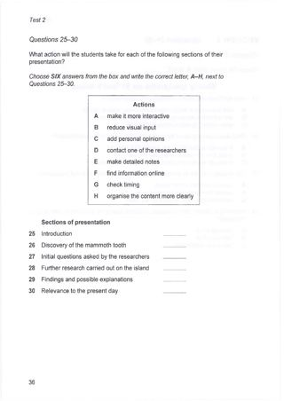
#2 OCR Q[[25, 30], [25, 30]] · 1191×1684
Test_2_Source_PDF_036.png
assets/public/d7de5a858ebde4cce35dba84c5aafec9385669cdbbf6d20e2db281f706ffbd80.png
asset-d7de5a858ebde4cce35dba84c5aafec9385669cdbbf6d20e2db281f706ffbd80 Cambridge 14 / Test 2 / Part 4
No confirmed/candidate defect detected; not a visual PASS
Q[31, 40]: 1 [Part fallback]
#1 OCR Q[[31, 40]] · 1191×1684
Test_2_Source_PDF_037.png
assets/public/77db298d71b8edc31022f945f6bf47dd30dd15b2b46ee6308a68b18412d4e71c.png
asset-77db298d71b8edc31022f945f6bf47dd30dd15b2b46ee6308a68b18412d4e71c Cambridge 14 / Test 3 / Part 1
No confirmed/candidate defect detected; not a visual PASS
Q[1, 10]: 1
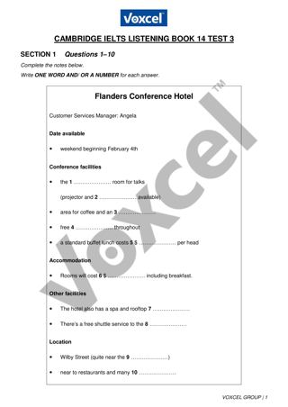
#1 OCR Q[[1, 10]] · 1191×1684
cambridge-14-test-03-part-1.png
assets/public/983371233001337a1e97f8f9c6147527312639bbb0b2d9d71f4326863cad02c4.png
asset-983371233001337a1e97f8f9c6147527312639bbb0b2d9d71f4326863cad02c4Cambridge 14 / Test 3 / Part 2
No confirmed/candidate defect detected; not a visual PASS
Q[11, 12]: 1, 2 [Part fallback]
Q[13, 14]: 1, 2 [Part fallback]
Q[15, 20]: 1, 2 [Part fallback]
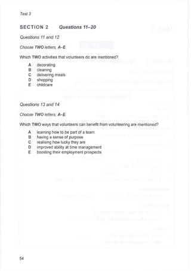
#1 OCR Q[[11, 20]] · 1191×1684
Test_3_Source_PDF_054.png
assets/public/42da346f944f4cb671f8c83b6f58d54e70042cfed40eba6074c145b04c048c21.png
asset-42da346f944f4cb671f8c83b6f58d54e70042cfed40eba6074c145b04c048c21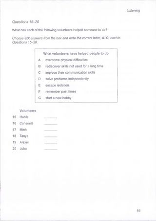
#2 OCR Q[[15, 20], [15, 20]] · 1191×1684
Test_3_Source_PDF_055.png
assets/public/875134591bc0e78d96ce0c4a3cdabf8c79845be6fa80c6bd448e579ab31864b1.png
asset-875134591bc0e78d96ce0c4a3cdabf8c79845be6fa80c6bd448e579ab31864b1Cambridge 14 / Test 3 / Part 3
No confirmed/candidate defect detected; not a visual PASS
Q[21, 26]: 1, 2 [Part fallback]
Q[27, 30]: 1, 2 [Part fallback]
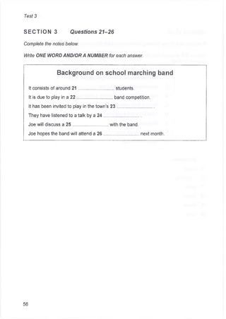
#1 OCR Q[[21, 26]] · 1191×1684
Test_3_Source_PDF_056.png
assets/public/8096835b8697593c5903550ac7a7b03c9c5e3e8d0a781b0a6a30e8282fc036b8.png
asset-8096835b8697593c5903550ac7a7b03c9c5e3e8d0a781b0a6a30e8282fc036b8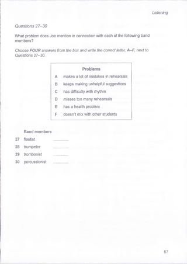
#2 OCR Q[[27, 30], [27, 30]] · 1191×1684
Test_3_Source_PDF_057.png
assets/public/2e9dc02c73258a554376ba2258f35985294b0549b86d92af077ff5263a383ff7.png
asset-2e9dc02c73258a554376ba2258f35985294b0549b86d92af077ff5263a383ff7Cambridge 14 / Test 3 / Part 4
No confirmed/candidate defect detected; not a visual PASS
Q[31, 40]: 1 [Part fallback]
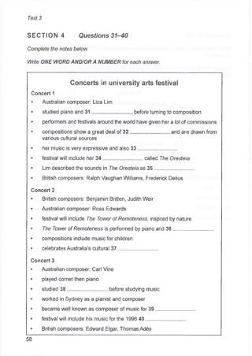
#1 OCR Q[[31, 40]] · 1191×1684
Test_3_Source_PDF_058.png
assets/public/a1d43eba7dd17df24253987606bb4e3651eec00fe606e0931808c1d33b428cbf.png
asset-a1d43eba7dd17df24253987606bb4e3651eec00fe606e0931808c1d33b428cbfCambridge 14 / Test 4 / Part 1
No confirmed/candidate defect detected; not a visual PASS
Q[1, 7]: 1, 2 [Part fallback]
Q[8, 10]: 1, 2 [Part fallback]
#1 OCR Q[[1, 10], [1, 7]] · 1191×1684
Test_4_Source_PDF_075.png
assets/public/7dd9ca84cc581141d70077c13802913e1a81cf17d719505ac3534376698c33ff.png
asset-7dd9ca84cc581141d70077c13802913e1a81cf17d719505ac3534376698c33ff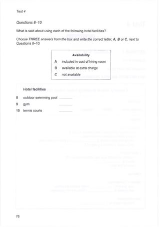
#2 OCR Q[[8, 10], [8, 10]] · 1191×1684
Test_4_Source_PDF_076.png
assets/public/1d27d9480064516d970d6e404a35d8f9934784d5c4db23681a45fd3f9098f7f9.png
asset-1d27d9480064516d970d6e404a35d8f9934784d5c4db23681a45fd3f9098f7f9 Cambridge 14 / Test 4 / Part 2
No confirmed/candidate defect detected; not a visual PASS
Q[11, 16]: 1, 2 [Part fallback]
Q[17, 18]: 1, 2 [Part fallback]
Q[19, 20]: 1, 2 [Part fallback]
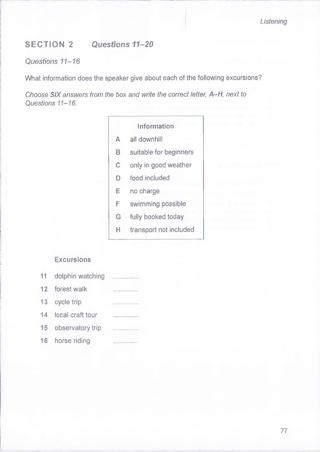
#1 OCR Q[[11, 20], [11, 16], [11, 16]] · 1191×1684
Test_4_Source_PDF_077.png
assets/public/4a817936d4a423f1f763e522f92edb633b84b22cb3aed1ecefc311547ed5392b.png
asset-4a817936d4a423f1f763e522f92edb633b84b22cb3aed1ecefc311547ed5392b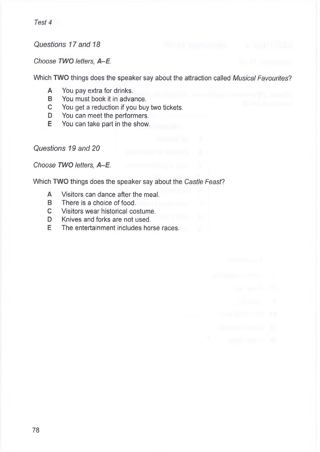
#2 OCR Q[] · 1191×1684
Test_4_Source_PDF_078.png
assets/public/243956cc788f6318ba8ef045b8f2d0bff77c1531fc8468155e661621b463f88e.png
asset-243956cc788f6318ba8ef045b8f2d0bff77c1531fc8468155e661621b463f88eCambridge 14 / Test 4 / Part 3
No confirmed/candidate defect detected; not a visual PASS
Q[21, 25]: 1, 2 [Part fallback]
Q[26, 30]: 1, 2 [Part fallback]
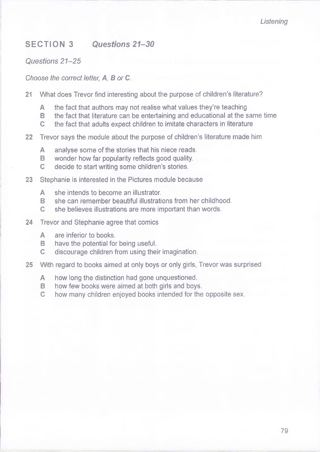
#1 OCR Q[[21, 30], [21, 25]] · 1191×1684
Test_4_Source_PDF_079.png
assets/public/1b3ce060d3c72f2d6a919b026690ac315d719947869130e0f7d574a14f241034.png
asset-1b3ce060d3c72f2d6a919b026690ac315d719947869130e0f7d574a14f241034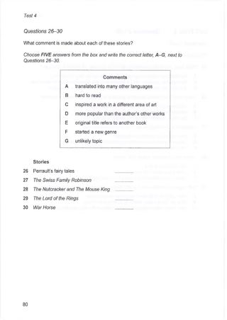
#2 OCR Q[[26, 30], [26, 30]] · 1191×1684
Test_4_Source_PDF_080.png
assets/public/3c4c944aa594d0b917a2ddd83c55464aa1989950792cbd3b10ac3e7d421b6e36.png
asset-3c4c944aa594d0b917a2ddd83c55464aa1989950792cbd3b10ac3e7d421b6e36Cambridge 14 / Test 4 / Part 4
V0318:confirmed:duplicate_content; C035:suspected:crop_edge_risk
Q[31, 40]: 1, 2 [Part fallback]
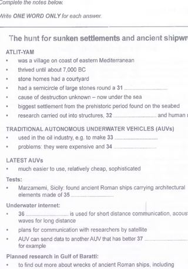
#1 OCR Q[] · 850×1215
Test_4_Section_4_Underwater_Archaeology_Notes.png
assets/public/c0c5674635297c65275f8ae708a49fac1d4bb6db7886a4850f7590ba67b7c3ff.png
asset-c0c5674635297c65275f8ae708a49fac1d4bb6db7886a4850f7590ba67b7c3ff#2 OCR Q[[31, 40]] · 1191×1684
Test_4_Source_PDF_081.png
assets/public/22e9ab4e40bee440fd21d453acf2a5bc1cf11af86740fc928753163de9e63ae5.png
asset-22e9ab4e40bee440fd21d453acf2a5bc1cf11af86740fc928753163de9e63ae5